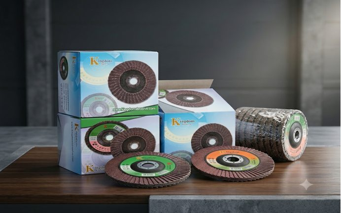
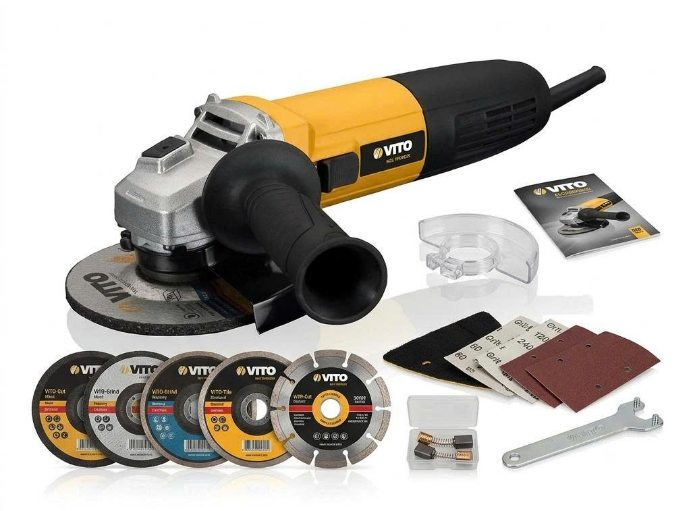

Từ xử lý mối hàn, loại bỏ phần kim loại thừa đến hoàn thiện bề mặt sản phẩm, máy mài và dụng cụ cơ khí đảm nhiệm nhiều công đoạn trong hoạt động sản xuất. Không chỉ ảnh hưởng đến độ hoàn thiện của chi tiết, việc lựa chọn thiết bị và phụ kiện phù hợp còn liên quan trực tiếp đến chất lượng gia công, tiến độ và an toàn tại các xưởng cơ khí.

Máy mài và dụng cụ cơ khí được sử dụng phổ biến tại các nhà máy, xưởng chế tạo và cơ sở sửa chữa. Nhóm thiết bị này phục vụ nhiều công việc như cắt vật liệu, mài nhẵn, đánh bóng, xử lý mối hàn và làm sạch bề mặt kim loại.
Trong gia công cơ khí, máy mài góc thường được sử dụng để cắt kim loại, loại bỏ phần vật liệu thừa và xử lý các mối hàn. Máy mài bàn phục vụ việc mài sắc dụng cụ, chỉnh sửa chi tiết tại vị trí cố định. Trong khi đó, máy mài khuôn phù hợp với các chi tiết nhỏ, góc hẹp và những vị trí đòi hỏi độ chính xác cao.
Đáng chú ý, chất lượng của một sản phẩm cơ khí không chỉ phụ thuộc vào độ chính xác mà còn nằm ở khâu xử lý bề mặt sau đó. Những đường cắt chưa phẳng, mối hàn còn gồ ghề hay cạnh kim loại sắc đều cần được xử lý trước khi chi tiết chuyển sang công đoạn tiếp theo. Vì vậy, máy mài và các phụ kiện đi kèm góp phần quan trọng vào độ hoàn thiện và tính đồng đều của sản phẩm.

Bên cạnh thiết bị chính, các phụ kiện như đá mài, đá cắt, đĩa nhám xếp và chổi đánh gỉ cũng được sử dụng trong nhiều công đoạn. Mỗi loại có đặc tính và mục đích sử dụng riêng, tùy thuộc vào vật liệu, yêu cầu xử lý và mức độ hoàn thiện của sản phẩm. Việc lựa chọn phụ kiện phù hợp giúp quá trình gia công đạt hiệu quả, hạn chế ảnh hưởng không mong muốn đến bề mặt chi tiết.

Một vấn đề cần quan tâm trong quá trình sử dụng là tình trạng của máy móc và phụ kiện. Đĩa mài, đĩa cắt bị mài mòn, nứt vỡ hoặc không phù hợp với thiết bị có thể làm giảm hiệu quả công việc, ảnh hưởng đến chất lượng sản phẩm và tiềm ẩn nguy cơ mất an toàn khi vận hành.
Do máy mài thường hoạt động ở tốc độ quay cao, phát sinh tia lửa và bụi kim loại, việc kiểm tra thiết bị trước khi sử dụng là yêu cầu cần thiết. Người lao động cần bảo đảm phụ kiện được lắp đặt đúng kỹ thuật, sử dụng đúng thông số của nhà sản xuất và trang bị kính bảo hộ, găng tay cùng các phương tiện bảo vệ phù hợp.
Nhìn chung, độ chính xác ở công đoạn hoàn thiện đóng vai trò quyết định đến chất lượng cuối cùng của sản phẩm cơ khí. Chọn đúng thiết bị, kiểm soát tốt vật tư tiêu hao và tuân thủ quy chuẩn vận hành sẽ giúp doanh nghiệp duy trì năng suất bền vững đi đôi với an toàn lao động.